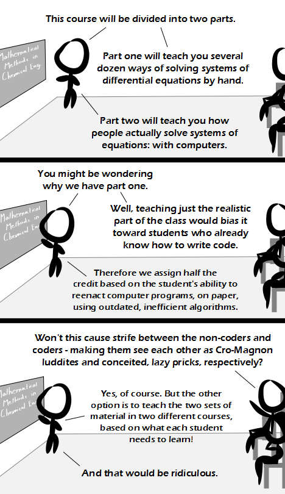

Comic JK 830
When I Feel Like It
⇤
<
?
>
⇥

⇤
<
?
>
⇥
Forum
.
RSS
.
Digg
.
Facebook
.
Reddit
.
Twitter
.
Stumbleupon
Enter your thoughts on number 830 here. Please, no spamming, trolling, phreaking or developing ground breaking math curriculi. Ah, the classic lazy post-modern approach: "I don't care how anything works, as long as it does." Why not use calculators from first grade on? Nobody needs to be able to add to numbers manually anyway, what sense would that make? I still wonder why we still learn to walk, as there are electric wheelchairs around for quite some time now... > Ah, yes, the tradition for the sake of tradition approach: "I don't care if it works better the new way, the old way's just fine". Let's lie to kids about how calculators are used in the real world, and ban them from all math classes, even in college! Who cares that the world is going to change whether we like it or not, we can't let our student change from the ancient ways! >> I'm a high school student and calculators are sanctioned and used everywhere. The "high-tech" graphing ones, too. >>> wait until you hit college and they ban them from tests for no good reason >>I'm definitily not in favor of tradition for tradition's sake (but wait 'til you turn forty, your view might have changed a little by then ;)), but in my opinion it doesn't hurt to know a little about the stuff the computer does for us. Not that you need it, but so that you know it. Oh, and I almost forgot: You forget or underestimate the value of metalearning. Without having to learn stuff like this, you don't learn how to learn stuff like this when you might need to. >>>+1. Also, when I graduated high school 10 years ago, calculators were allowed almost everywhere, and a graphing calculator was required for calculus. I don't know where "no calculators" is still a thing. This! What good is an answer spit out from a computer if you don't know what it means? >>The class should be in *programming* the computers - that way you know exactly what it means. You can't be vague with a computer the way you can on an exam with a human teacher. >>> Not true. You can program a computer to solve a math problem which you don't understand the purpose of. >>>> 'Purpose' is not the same as 'method.' Understanding an algorithm's purpose is different from being able to program it OR do it by hand; it's a third thing which math classes should teach. >>>> What does the following mean? e^(pi*i) = -1 What does this mean!? This is a true statement, yes, but this does not make any sense. Why should e and tau be related like this? Especially since basically you are undoing the Sqrt(-1) by applying this. >>>>> I prefer the form e^(i*t) = cos(t) + i*sin(t). The thing is, the unit imaginary number 'i' is not simply sqrt(-1). It's related to frequency-domain representation of the time component of a waveform and represents part of the orientation of a cycle at a point in time. At the most fundamental level, all that exists in the world are exponential decays and oscillations. e is for the decay part, and tau and i are for the oscillating part. This just brings everything together. It actually does make sense, but I think you have to have worked with math and physics for many years to actually see it. “That's absurd!” -- Severus Snape //develop me #include <iostream> #include <your_anus> #include <me> using namespace C_,_the_best_part_of_C++; //use specifics if you need to class mofo { mofo() { do { // doing anus dead or alive.... even if it is private... your_anus.do(me.dick); } while (your_anus.is_alive()); } }; float main() { mofo mf; return 0.0; } > ...main() returning a float... *dies* >> This will work on some compilers. Sometimes you can even define it as a global variable with an array of machine code. >Good thing something is never instantiated. >> I fixed that for ya and changed the name to something more appropriate. >>> Good old C. I almost commented that mofo still isn't instantiated, as if this were something silly like C#. Computer program re-enactment. That would beat the renessaince fair any day! :-)